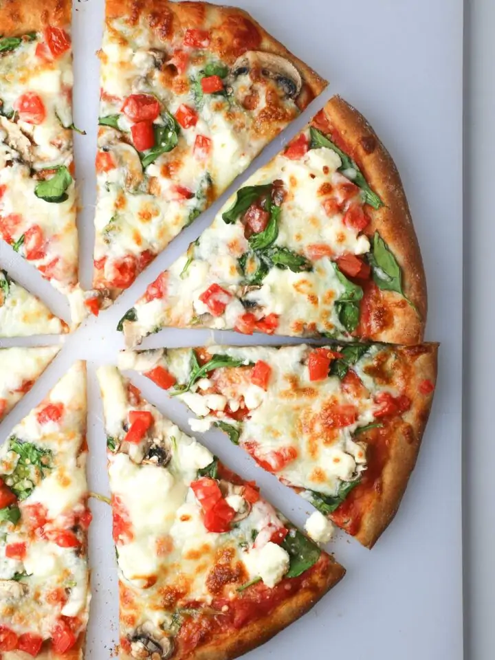

Pizza Corner

Greek Special Pizza
This Greek Pizza is nothing unique and the recipe is probably copied a million times,
i just didn't want to spend too much time on the description.
ingredients
- ½ cup mayonnaise
- 4 cloves garlic, minced
- 1 cup crumbled feta cheese, divided
- 1 (12 inch) pre-baked Italian pizza crust
- ½ cup oil-packed sun-dried tomatoes, coarsely chopped
- 1 tablespoon oil from the sun-dried tomatoes
- ¼ cup pitted kalamata olives, coarsely chopped
- 1 teaspoon dried oregano
- 2 cups baby spinach leaves
- ½ small red onion, halved and thinly slice
Steps
- Adjust oven rack to lowest position, and heat oven to 450 degrees. Mix mayonnaise, garlic and 1/2 cup feta in a small bowl. Place pizza crust on a cookie sheet; spread mayonnaise mixture over pizza, then top with tomatoes, olives and oregano. Bake until heated through and crisp, about 10 minutes.
- Toss spinach and onion with the 1 Tb. sun-dried tomato oil. Top hot pizza with spinach mixture and remaining 1/2 cup feta cheese. Return to oven and bake until cheese melts, about 2 minutes longer. Cut into 6 slices and serve.